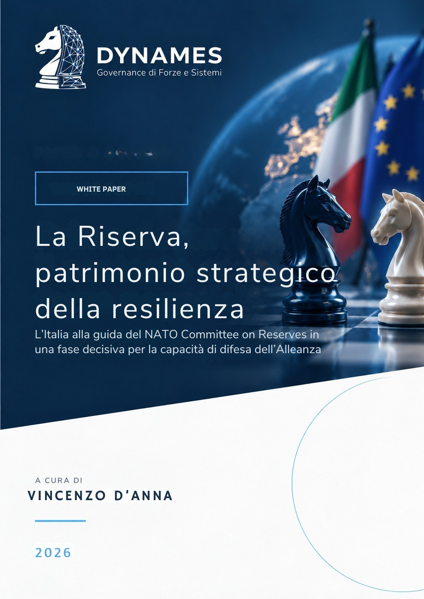

DYNAMES
DYNAMESScarica il white paper
Il contributo integrale, con apparato di note e riferimenti, è disponibile nel documento PDF.

Scarica il PDFLa Riserva come capacità di sistema
L’Italia assume la presidenza del NATO Committee on Reserves mentre profondità strategica, civil preparedness, approcci Whole-of-Government e Whole-of-Society, base industriale e societal resilience convergono nella riflessione sulla capacità di sostenere la difesa nel tempo. Il White Paper legge la Riserva come parte di una capacità di sistema: non solo personale aggiuntivo, ma anche competenze specialistiche, continuità operativa e connessione tra Forze Armate, istituzioni, industria, infrastrutture e società. La presidenza italiana del NCR apre quindi uno spazio utile per trasformare il confronto alleato in conoscenza applicabile alla costruzione di una Riserva nazionale pronta, scalabile e integrata.
Il paper in sintesi
Dalla massa alla resilienza: perché la Riserva torna strategica
La presidenza italiana del NATO Committee on Reserves arriva in una fase in cui la guerra prolungata ha riportato al centro massa, mobilitazione e capacità di rigenerazione. La questione non riguarda soltanto quante persone possano essere richiamate, ma quale profondità uno Stato riesca a esprimere quando la crisi dura, le competenze diventano scarse e la continuità delle funzioni essenziali entra direttamente nella capacità di difesa.
Il ritorno della profondità
La NATO Policy on Reserves riconosce che gli organici permanenti possono non bastare in scenari ad alta intensità e di lunga durata. Le riserve servono quindi ad ampliare le forze disponibili, rigenerare capacità e colmare rapidamente capability gap. La profondità strategica non è però solo quantità: significa anche accesso a competenze che sarebbe inefficiente mantenere stabilmente nello strumento attivo.
La capacità militare è una capacità di sistema
Energia, reti digitali, trasporti, sanità, logistica, industria e capitale umano condizionano direttamente l’efficacia militare. Molte di queste capacità appartengono alla sfera civile. La Riserva acquista quindi valore quando è inserita in un’architettura più ampia di resilienza, capace di collegare prontezza militare, civil preparedness, infrastrutture e continuità dei servizi essenziali.
Total Defence e approccio Whole-of-Society
I modelli di Total Defence mostrano il valore dell’integrazione tra istituzioni, imprese e cittadini, ma non esiste un modello unico esportabile. Nel quadro NATO risultano più flessibili gli approcci Whole-of-Government e Whole-of-Society, che rendono visibili le dipendenze reciproche senza imporre una struttura uniforme. La resilienza nasce dalla capacità di governare queste interdipendenze prima della crisi.
Il patrimonio meno visibile
La resilienza dipende anche da fiducia, comprensione del rischio, legittimità delle istituzioni e disponibilità a cooperare. La societal resilience rende attivabili le capacità materiali, ma il coinvolgimento della società non può trasformarsi in arretramento dello Stato. La cooperazione funziona quando amplia la capacità collettiva mantenendo chiare responsabilità pubbliche e doveri istituzionali.
La Riserva dentro la resilienza
La Riserva combina esperienza militare e competenze maturate nella vita civile: cyber, spazio, tecnologie emergenti, ingegneria, medicina, diritto, IT e logistica. Questa permeabilità richiede però pianificazione. Le stesse professionalità utili alla Difesa possono essere indispensabili nel settore civile; per questo il vero problema non è solo richiamare competenze, ma decidere dove esse producano il maggiore effetto sistemico.
L’Italia davanti a un’occasione rara
Nel 2026 il tema della Riserva ha assunto maggiore definizione anche in Italia, con l’ipotesi di una componente operativa, specialistica e territoriale e con l’indirizzo politico verso una Riserva pronta, scalabile e integrata. La presidenza del NCR può diventare un laboratorio utile per confrontare modelli alleati, modalità di richiamo, formazione, rapporto con i datori di lavoro e impiego degli specialisti.
Un patrimonio da preparare prima della crisi
La Riserva diventa patrimonio strategico quando consente di trasformare, entro regole e tempi definiti, una parte del capitale umano della società in capacità di difesa. Può dare massa, conservare esperienza e riportare rapidamente nello strumento competenze sviluppate altrove. Perché ciò sia credibile, però, industria, infrastrutture, sanità, logistica, norme, datori di lavoro e società devono poter sostenere lo sforzo senza perdere le proprie funzioni essenziali.
Il White Paper completo approfondisce il quadro NATO, i modelli comparati, la societal resilience e le implicazioni per la futura Riserva italiana, con riferimenti dottrinali e bibliografici.
Cita questo White Paper
D’Anna, V. (2026). La Riserva, patrimonio strategico della resilienza. L’Italia alla guida del NATO Committee on Reserves in una fase decisiva per la capacità di difesa dell’Alleanza. DYNAMES – Fondazione Boscacci ETS. Versione 1.0. DOI: 10.5281/zenodo.22682260.
Il record bibliografico e il DOI consentono l’identificazione persistente della pubblicazione e l’allineamento dei metadata tra DYNAMES, Zenodo e le principali piattaforme di ricerca e networking scientifico.

Vincenzo D’Anna
Ex allievo della Scuola Militare Nunziatella, si occupa di analisi geopolitica, comunicazione strategica, cultura della difesa e rapporto tra sicurezza, istituzioni e società civile, contribuendo all’indirizzo scientifico di DYNAMES.